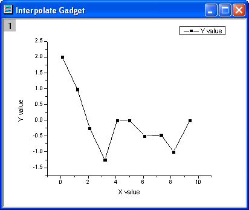
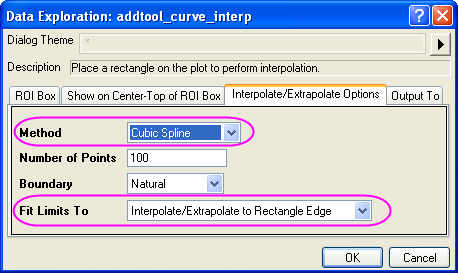
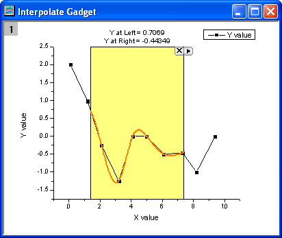
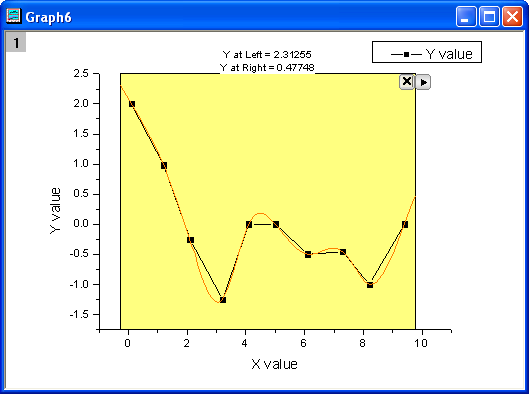
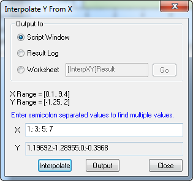

Minitool Interpolation
Interpolate-Gadget
Zusammenfassung
Origin unterstützt das Minitool Interpolation, um eine schnelle Interpolation für eine bestimmte grafische Datenauswahl (ROI) in einem aktiven Diagramm durchführen zu können. Sie können den zu interpolierenden Bereich einfach durch Verschieben der ROI verändern.
Was Sie lernen werden
- Datenpunkte in einem rechteckigen Bereich auf einfache Weise interpolieren
- Einen interpolierten Y-Wert eines gegebenen X-Werts schnell ermitteln
- Die interpolierten Werte im Skriptfenster, im Ergebnisfenster oder einem festgelegten Arbeitsblatt ausgeben
Schritte
Dieses Tutorial basiert auf dem Projekt: <Origin-Verzeichnis>\Samples\Tutorial Data.opj.
- Öffnen Sie Tutorial Data.opj und navigieren Sie zu dem Ordner Interpolate Gadget im Projekt Explorer.
- Markieren Sie Col(A) und Col(B) in der Arbeitsmappe Book1R und zeichnen Sie ein Punkt-Linien-Diagramm.

- Wählen Sie bei aktivem Diagramm Minitools: Interpolieren im Origin-Menü, um den Dialog Interpolate: addtool_curve_intep aufzurufen.
- Gehen Sie zur Registerkarte Optionen Interpolieren/Extrapolieren. Wählen Sie Kubische Spline für die Methode und dann Zur Kante des Rechtecks interpolieren/extrapolieren in der Auswahlliste Grenzen festlegen auf.

- Klicken Sie auf OK. Dem Diagramm wird eine Interpolationslinie hinzugefügt. Die Y-Werte der Interpolationslinie rechts und links werden oberhalb der rechteckigen Fläche angezeigt.

- Sie können den Datenbereich verändern, indem das gelbe Rechteck der grafischen Datenauswahl (ROI) verschieben oder in der Größe verändern. Die angezeigte interpolierte Kurve wird bei jeder Bewegung der ROI aktualisiert.
Klicken Sie auf die dreieckige Schaltfläche  und wählen Sie Auf gesamten Diagrammbereich erweitern im Ausklappmenü, um die Gesamtfläche für die Kurve zu interpolieren.
und wählen Sie Auf gesamten Diagrammbereich erweitern im Ausklappmenü, um die Gesamtfläche für die Kurve zu interpolieren.

- Mit diesem Minitool können Sie Y-Werte aus einem gegebenen X-Wert ermitteln. Klicken Sie auf die dreieckige Schaltfläche und wählen Sie X/Y interpolieren, um den Dialog Y von X interpolieren zu öffnen. Sie können mehrere X-Werte eingeben und auf die Schaltfläche Interpolieren klicken. Dieses Hilfsmittel gibt die interpolierten Y-Werte für jeden X-Wert aus.

- Die interpolierten Y-Werte können im Skriptfenster, im Ergebnisfenster oder einem festgelegten Arbeitsblatt ausgeben werden.